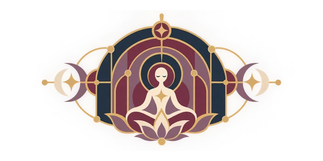
TYPE/16 · Galería V3
Las 12 ilustraciones maestras: originales del usuario adaptados a WebP con transparencia. Cada carta reutiliza su motivo mediante tres variaciones sutiles de color y ornamentación SVG.
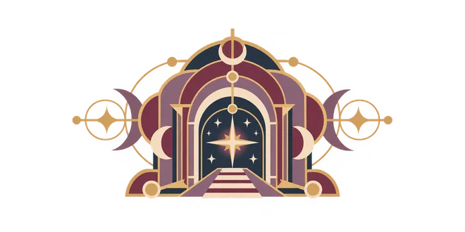
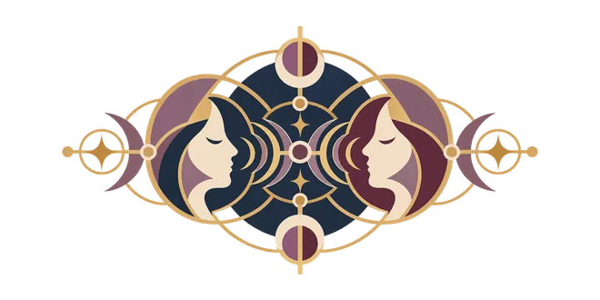
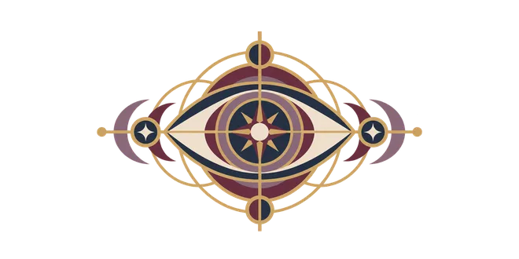
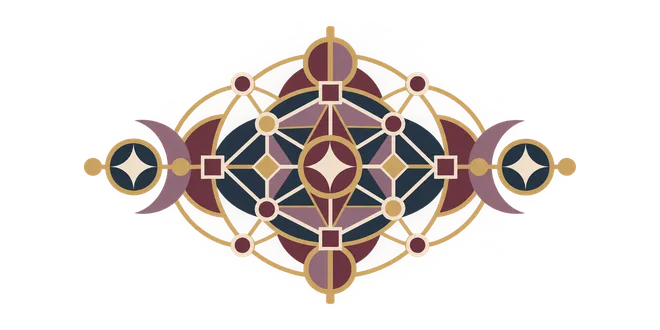
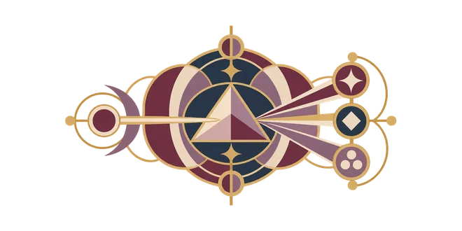
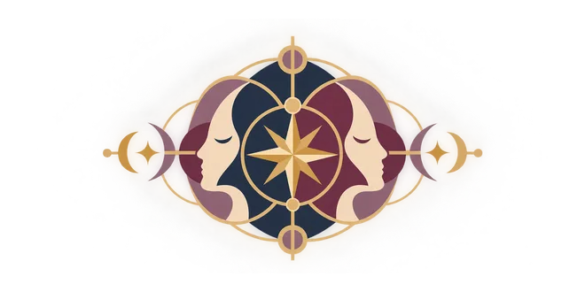
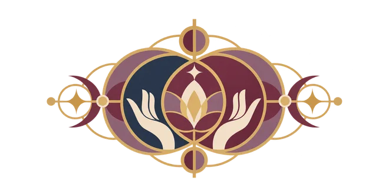
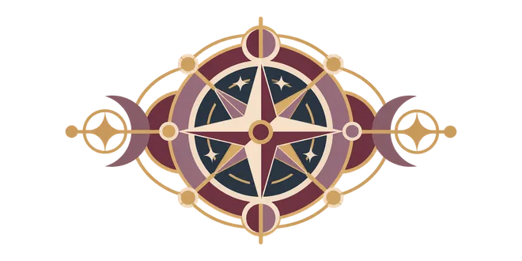
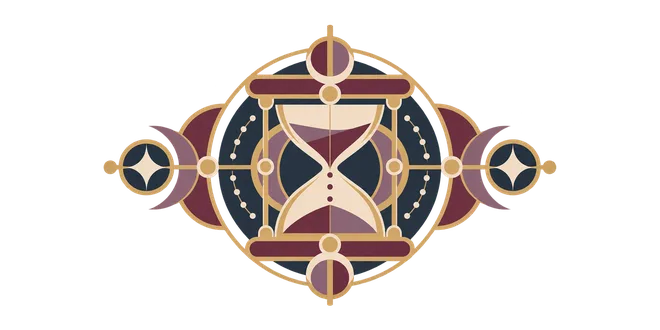
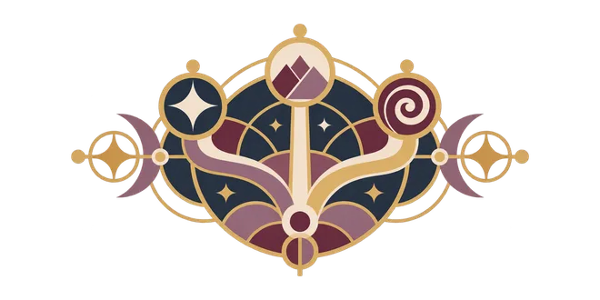
Vista sin recortes: la imagen se escala mediante object-fit: contain y conserva sus proporciones.